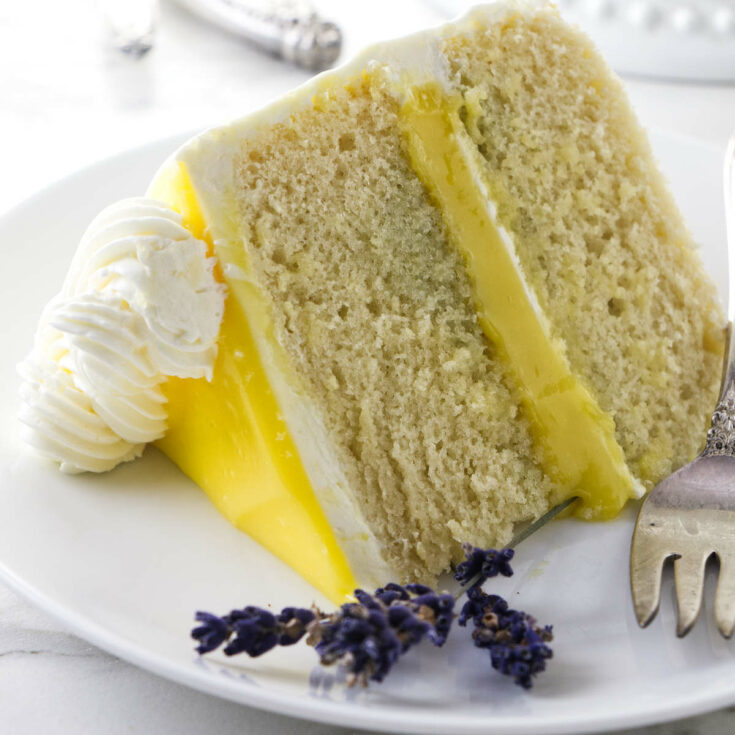

Lemon Lavender Cake

Description
Lemon lavender cake is a great addition to any sunny celebration from Mother’s Day to Labor Day. Its tartness from lemon and floral notes from lavender pair perfectly in this fork-tender cake.
Ingredients
For the lemon lavender cake layers
3 cups (360g) all-purpose flour
2 1/2 teaspoons baking powder
1/2 teaspoon baking soda
1/2 teaspoon kosher salt
2 cups (400g) sugar
2 tablespoons lemon zest (from about 4 lemons)
1 tablespoon dried culinary lavender
1/2 cup (113g) unsalted butter, room temperature
1/2 cup (120ml) vegetable oil
4 large eggs, room temperature
1 teaspoon vanilla extract
1/3 cup (80ml) fresh lemon juice
1 cup whole milk
For the lemon buttercream frosting
1 1/2 cup (3 sticks) unsalted butter, room temperature
6 cups (680g) powdered sugar
1/3 cup (80ml) whole milk
1 cup whole milk
Steps
Preheat the oven to 350°F.
Prepare the pans:
Grease 2 (8-inch) round cake pans with butter. Line the pans with parchment paper and grease the parchment. Dust the bottom and sides of the pans with flour and tap out the excess.Combine the dry ingredients:
In a medium bowl, whisk together the flour, baking powder, baking soda, and salt.Infuse the sugar:
In the bowl of a food processor, add the sugar, lemon zest, and dried lavender. Process the sugar mixture until the lavender is finely ground and the zest and lavender are distributed throughout the sugar, 1-3 minutes.Beat the butter, oil, and sugar:
In the bowl of a stand mixer fitted with the paddle attachment, or in a large mixing bowl with a hand mixer, beat the butter, vegetable oil, and lemon-lavender sugar on medium-high speed until very pale and fluffy, about 4 minutes. The mixture will have doubled or nearly tripled in volume.Add the eggs and vanilla:
Add the eggs, one at a time, beating until fully combined after each addition. Scrape down the bottom and sides of the bowl with a rubber spatula. Stir in the vanilla extract.Combine the wet and the dry:
Add one half of the flour mixture into the butter mixture and mix on low speed until incorporated. Pour in the milk and lemon juice and continue mixing on low speed until combined.
Add the rest of the flour mixture and mix on low speed just until incorporated. It’s okay if there are a few lumps, you don’t want to overmix the batter. Use a rubber spatula to scrape down the bowl in between additions to ensure the batter mixes evenly.Bake the lemon lavender cake layers:
Divide the batter evenly between the two prepared cake pans. Bake for 30 to 35 minutes, or until a toothpick inserted in the center of the cake comes out clean. The edges of the cake will have begun to pull away from the sides of the pan, and the center of the cake should spring back when gently poked with your finger.Cool the cakes:
Let the cakes cool in the pans for 15 minutes, then turn them out onto a wire rack to cool completely before frosting.Beat the butter for frosting:
To make the frosting: In a stand mixer fitted with the paddle attachment, or in a large mixing bowl with a hand mixer, beat the butter on medium speed until smooth and satiny, about 2 minutes.Add the powdered sugar, milk, and lemon extract:
Add the powdered sugar, half of the milk, and the lemon extract and continue beating on medium speed until light and fluffy, about 2 minutes. If the frosting is too thick, add more milk, 1 tablespoon at a time, until it reaches the desired consistency.Assemble the cake:
Place one of the cake layers right-side-up on a large plate or a 10-inch cardboard cake round. Use an offset spatula or a butter knife to spread a thick layer of frosting, 1/2 to 1 cup, evenly over the layer. Top with the remaining cake layer, placed up-side-down, so the top of the cake is smooth and flat. Check that the cake layers are centered and that the top of the cake is level. Gently adjust accordingly.Apply the crumb coat:
Spread a generous amount of frosting over the top and sides of the cake using an offset spatula or the straight edge of a large butter knife. Use the spatula to spread the frosting into a thin, even layer. You should be able to see the cake through the frosting.Refrigerate the cake and frosting:
Place the cake in the refrigerator for 20 minutes for the frosting to set. Cover the bowl of frosting.Frost the cake:
Remove the cake from the refrigerator. Stir the frosting a few times to smooth it out again.
Spread a generous amount of frosting over the top and sides of the cake as before, this time leaving a thicker layer of frosting. Use the offset spatula, a large spoon, or the back of a butter knife to smooth the sides.Storage:
The cake will keep for up to 4 days in a cake saver on the counter. Cake slices can be saved on a plate covered with plastic wrap for up to 4 days.
When storing leftover cake with slices missing, I like to cover the exposed cake layers with a piece of plastic wrap or parchment paper to prevent them from drying out.
Home